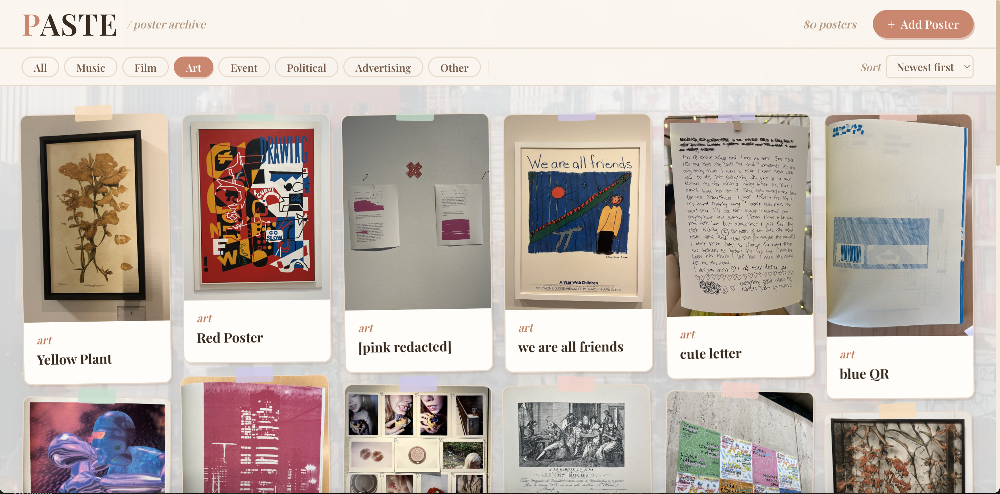
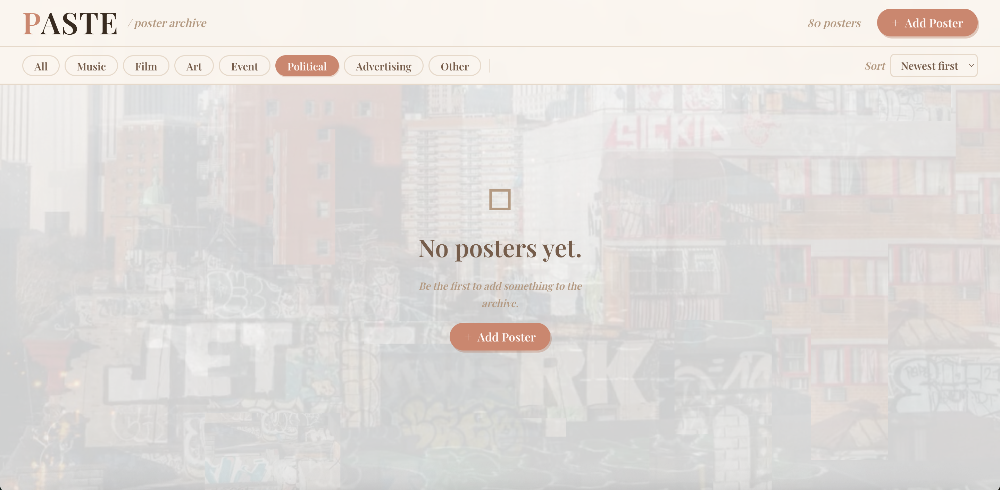
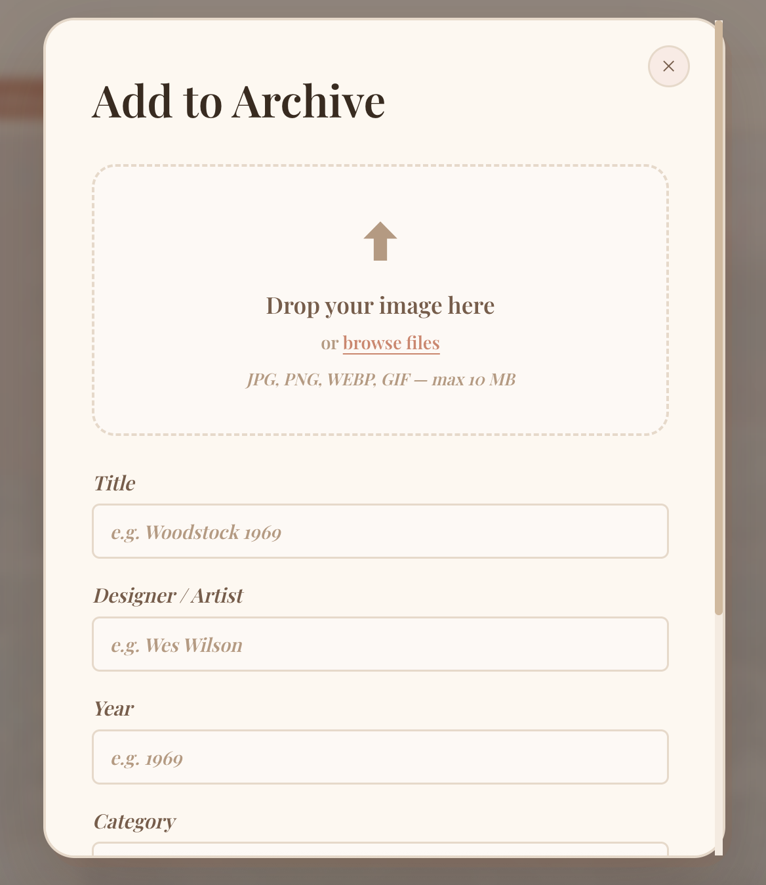
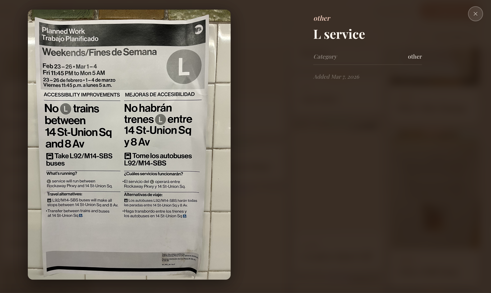

Archive Interface — Graphic Culture
PASTE — Poster Archive
A living catalog of printed media encountered in everyday life — posters, flyers, signage, and ephemera that most people walk past without a second glance. Open to anyone who wants to contribute.

We are surrounded by print. Stapled to telephone poles, taped to café windows, plastered across construction hoardings — posters are one of the most honest forms of public communication we have left. They announce concerts, mourn lost cats, sell services, protest, persuade, and occasionally just make you smile. Most people scroll past them the same way they scroll past everything else.
PASTE started as a personal impulse: I kept photographing posters on my camera roll and had nowhere to put them. The collection grew — event flyers with hand-kerned type, photocopied zine covers, bilingual notices layered over older bilingual notices — and I wanted a place where that accumulation could become something.
"There is so much printed media that we interact with in our day-to-day lives that I don't think people take the time to notice. PASTE is an invitation to slow down and look."
The Archive
The site functions as a searchable, browsable catalog — organized not by designer or era, but by what you'd actually find in the street: location, material, mood, subject. The interface is deliberately quiet so the posters themselves do the talking. Hovering over an entry surfaces context; clicking expands it to full bleed.
Each poster is logged with whatever metadata is available — date found, neighborhood, medium, condition — treating street ephemera with the same seriousness a museum would give a broadsheet. The result is a record of a particular cultural moment, told through what people chose to print and stick up.
Community Submission
Anyone can upload. The submission flow is intentionally minimal: a photo, a location, a short note if you want to leave one. The goal isn't curation but accumulation — the archive gets more interesting the messier and more various it becomes. What starts as one person's camera roll becomes a distributed, crowd-sourced document of printed public life.



